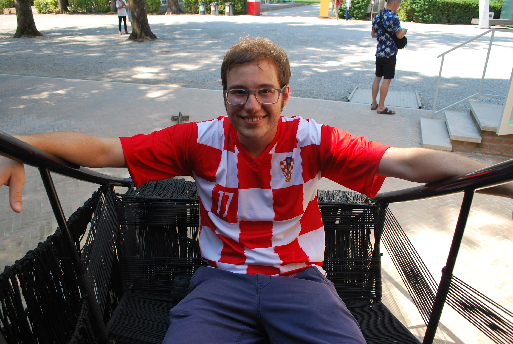

Joseph Quick
I am a student at the University of Michigan's School of Information, pursuing a degree in Information Sciences with a focus on User Experience Design. Outside of school, I have deep passions for both travel and photography. I left the United States for the first time in 2018 and it changed my entire perspective, I've had the "travel bug" ever since. While on the go, I've spent a lot of time taking pictures with film cameras and recording short reels of video via drones.
